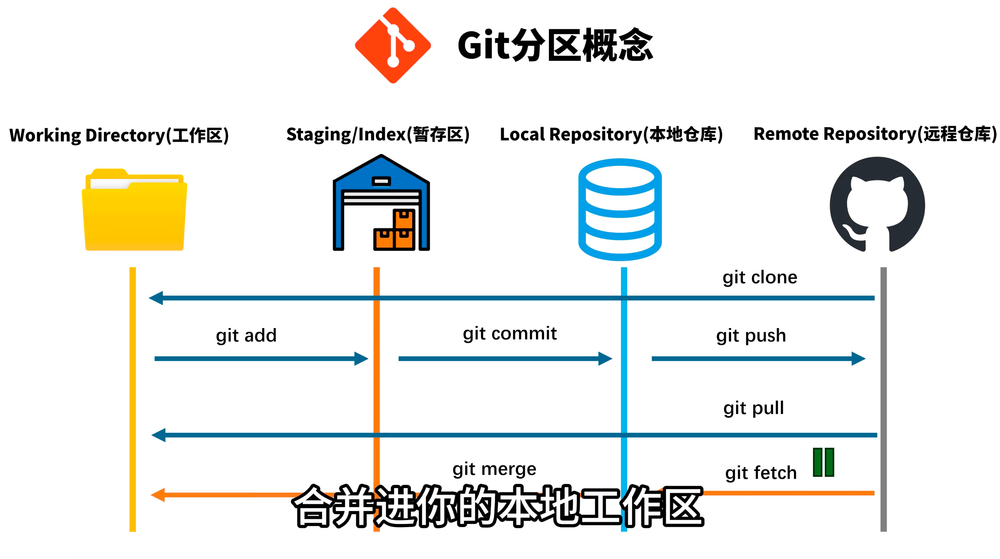
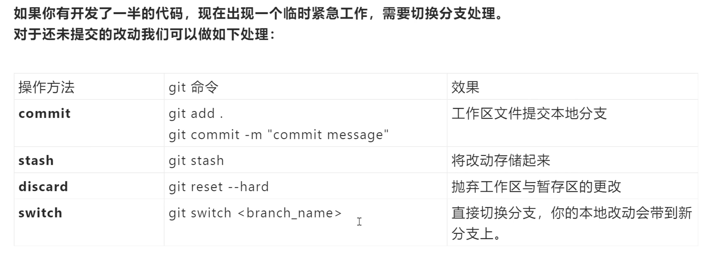
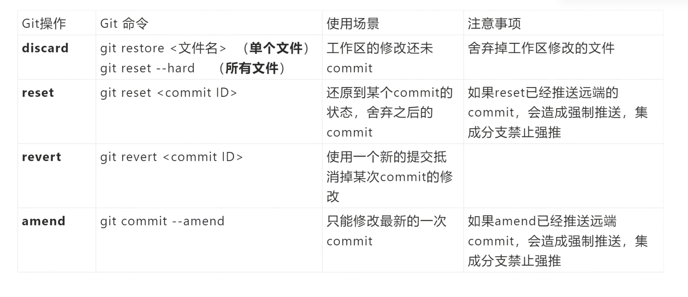
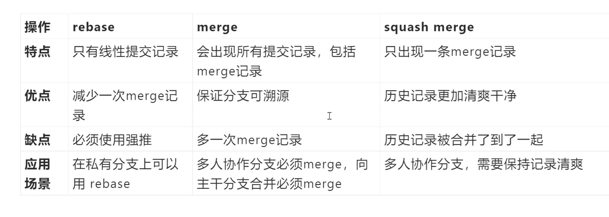

git add 将修改放入暂存区。git commit 将暂存区的内容写入本地仓库的历史记录。git push 将本地提交推送到远程；通过 git fetch/git pull 获取远程变更。git add：将工作区修改添加到暂存区git commit：将暂存区的改动提交到本地仓库git push：把本地仓库的提交推送到远程git fetch：只下载远程更新，不自动合并git pull：拉取远程更新并合并，等于 git fetch + git mergegit merge：将同分支上的改动合并git switch 分支名：切换分支；比老命令 git checkout 分支名 更适合新手记忆git switch -c 新分支名：创建并切换到新分支；git branch 新分支名 只创建分支，不会自动切过去
If 你有尚未提交的修改需要临时工作，下面给出一个切换处理的思路：
| 操作方法 | Git 命令 | 效果 |
|---|---|---|
| commit | git add . git commit -m "commit message" |
将工作区改动提交到本地分支 |
| stash | git stash |
将修改存储起来，清理工作区以便切换分支；后续再恢复 |
| discard | git reset --hard |
拋弃工作区与暂存区的改动，回到最近一次提交的状态 |
| switch | git switch <branch_name> |
直接切换分支，若本地改动会带到新分支上（按配置） |
git stash 将当前修改“存起来”，再切换分支处理紧急任务，完成后用 git stash pop 恢复。git reset --hard 清理工作区与暂存区的改动。git switch <branch_name> 切换分支时，若有未提交改动会被保留到新分支（视仓库设置而定），因此先确认是否需要 stash。git status 查看当前状态git diff 查看未暂存改动，git diff --staged 查看已暂存改动
# 查看状态
git status
# 撤销所有修改
git restore .
# 重新开始
# 编辑文件...
git add .
git commit -m "重新提交"
# 撤销暂存
git restore --staged .
# 重新选择文件
git add file1.txt
git commit -m "只提交file1.txt"
# 撤销提交但保留修改
git reset --soft HEAD~1
# 重新提交
git commit -m "正确的提交信息"
# 保存当前修改
git stash
# 切换分支
git switch other-branch
# 切换回来
git switch main
# 恢复修改
git stash pop
# 修改文件
# 编辑文件...
# 添加到暂存区
git add .
# 修改最近提交
git commit --amend -m "修正后的提交信息"

| 操作 | 特点 | 优点 | 缺点 | 应用场景与注意点 |
|---|---|---|---|---|
| rebase（变基） | 只保留线性提交，当前分支在目标分支之上重新应用 | - 历史线性、易读性高 | - 需要强推，修改公开历史时可能影响他人 | 私有分支整理提交历史，和主分支对齐后再合并；在发布前保持历史整洁 |
| merge（合并） | 会出现所有提交记录，包括 merge 提交 | - 可溯源，保留并行开发历史 | - 可能产生多条 merge 提交，历史不完全线性 | 公共分支合并，保留完整历史，方便追溯冲突来源 |
| squash merge（压缩合并） | 只出现一条 merge 记录，合并提交被压缩 | - 历史清爽，便于理解 | - 中间提交细节会丢失 | 需要合并成单条提交、历史尽量简洁时使用；不适合需要逐条追踪的场景 |
操作：rebase
操作：merge
操作：squash merge
通常是：工作区 → 暂存区 → 本地仓库 → 远程仓库。让我为你详细说明：
工作区 (Working Directory)
↓ git add
暂存区 (Staging Area)
↓ git commit
本地仓库 (Local Repository)
↓ git push
远程仓库 (Remote Repository)
# 添加所有修改的文件到暂存区
git add .
# 或者添加特定文件
git add README.md
# 查看暂存区状态
git status
# 提交暂存区的文件到本地仓库
git commit -m "添加MinerU用户手册README"
# 查看提交历史
git log --oneline
# 推送到远程仓库（首次推送）
git push -u origin main
# 后续推送
git push
# 1. 查看当前状态
git status
# 2. 添加文件到暂存区
git add README.md
# 3. 提交到本地仓库
git commit -m "添加MinerU用户手册README文件"
# 4. 推送到远程仓库
git push origin main
# 查看工作区和暂存区的差异
git diff
# 查看暂存区和本地仓库的差异
git diff --cached
# 撤销暂存区的文件（不删除工作区文件）
git reset HEAD README.md
# 查看远程仓库信息
git remote -v
这个顺序确保了代码的版本控制是安全和有序的，每一步都可以检查和确认。
origin。main 或 master）。git fetch：把远程最新的提交记录和分支信息下载到本地（但是不改动你当前工作区）。git merge：把某条分支的更改合并到你当前分支（可能产生冲突）。git pull = git fetch + git merge（默认行为）。git push：把你本地提交上传到远程（比如 origin main）。git config --global user.name "你的名字"
git config --global user.email "you@example.com"
git remote -v
# 常见输出会显示 origin 的 URL（GitHub 地址）
git branch -a
# - 本地分支会列出
# - 远程分支会以 remotes/origin/xxx 列出
目标：把云端最新拉下来，遇到冲突能够判断并手动合并，然后把合并结果推回云端。
下面给出完整、稳妥的步骤（假设目标分支是 main）。
git status
确认你是否有未暂存或未提交的修改。
建议 A（推荐）：先提交本地改动（明确、可回溯）
git add .
git commit -m "描述你的本地改动"
可选 B（不想提交，临时保存）：使用 stash
git stash push -m "临时保存：我要拉远端"
# 拉完并处理完后用 git stash pop 恢复
git fetch origin
这步只是把远端最新提交拿下来，放到 origin/main（远程引用），不会修改你当前工作目录的文件。
main：git checkout main 或 git switch main）git merge origin/main
简便写法：
git pull origin main（等同于git fetch+git merge）。但我推荐先fetch再merge，因为fetch更安全、可观察。
git push origin main
如果推送被拒绝（因为远端在你本地最后一次 fetch 后被更新了），那说明在你合并前远端又变动了，按提示再做 git fetch/git merge。通常重复上面流程即可。
当 git merge origin/main 报有冲突时，Git 会在冲突的文件里插入如下标记：
<<<<<<< HEAD
这是你本地的修改（HEAD 指向当前分支）
=======
这是远端 origin/main 的修改
>>>>>>> origin/main
解决步骤：
git add <冲突文件1> <冲突文件2>
merge 需要提交）：git commit -m "解决合并冲突：具体说明做了什么"
git push origin main
git fetch origin
git reset --hard origin/main
⚠️ reset --hard 会永久丢弃本地未提交改动，请谨慎使用。
git push --force-with-lease origin main
--force-with-lease 比 --force 更安全，能在远端发生你不知道的变动时阻止强推，避免覆盖他人的工作。merge 和 rebase 的简单解释（知道即可，不强制使用） merge：把两个分支合并，保留历史分叉，会产生合并提交（history 会显示分叉）。rebase：把你的提交“移动”到远端最新提交之后，历史更直线化（更整洁），但需要小心在公共分支上 rebase 已经推送的提交（会改写历史，可能影响他人）。如果你想把远端变动线性地放在你本地改动之前，常用：
git pull --rebase origin main
这会把远端变动先拿来，然后把你的本地提交放在后面，减少合并提交。但若有冲突，解决方式与 merge 类似（解决后 git rebase --continue）。
每次开始工作先 git pull origin main（或者先 git fetch 再看看再合并），保持本地与远端尽量同步。
在本地做一个功能改进，建议新建分支：
git switch -c feat/xxx
# 做改动 → commit → push origin feat/xxx
# 在 GitHub 上发 Pull Request 合并到 main（减少与他人直接在 main 冲突）
常用命令：
git status：随时查看当前工作状态（最常用）git log --oneline --graph --all：看历史和分支图（可视化）git diff：看哪些内容改了git stash：临时保存未提交改动git branch -a：查看所有分支（本地 + 远端）。git fetch origin：把远端更新下载到本地（不合并）。ggit push origin main 是笔误，正确是 git push origin main：把本地 main 的提交推到远端 origin。# 查看状态
git status
# 保存本地改动（提交）
git add .
git commit -m "说明"
# 查看远端地址和分支
git remote -v
git branch -a
# 拉远端更新（只下载，不合并）
git fetch origin
# 拉并合并（快捷）
git pull origin main
# 用 fetch + merge（更可控）
git fetch origin
git merge origin/main
# 推送本地到远端
git push origin main
# 创建并切换分支
git switch -c feat/xxx
# 老写法：git checkout -b feat/xxx
# 临时保存未提交改动
git stash
git stash pop # 恢复
# 如果要把远端覆盖本地（危险）
git fetch origin
git reset --hard origin/main
# 如果要强制把本地覆盖远端（更危险，团队谨慎）
git push --force-with-lease origin main
git status、pull、push 的基本含义。main 当成随意可破坏的分支；多人协作时尽量用 feature 分支 + PR。push 被拒绝，别直接 --force，先 git pull（或者 fetch + merge），解决冲突后再 push。reset --hard 会丢失改动，慎用。rebase 已经推送的提交（会改写历史，导致其他同事仓库出问题）。git init： （用户在终端执行Git命令时遇到 fatal: not a git repository 错误）
典型场景：
你在 VS Code 里新建了一个项目文件夹（例如前端项目、Python 项目、文档项目等），准备把它托管到 GitHub。
使用时机：
在这个新建的文件夹中，还没有 .git 目录（即不是 Git 仓库）时，执行：
git init
然后按步骤添加远程仓库并推送到 GitHub。
🔹 VS Code 内操作路径：
git init → git add . → git commit → git push方法一：通过GitHub网站创建（推荐）
本地部署知识库与教程 或 local-deployment-knowledge-base各类本地部署的知识库与教程集合方法二这里没写
# 添加远程仓库
git remote add origin https://github.com/nanhongchuan/-.git
# 将当前分支的名称重命名为 main
git branch -M main
# 推送代码到GitHub
git push -u origin main
-M选项是--move --force的简写。这意味着：
<new-branch-name> 已经存在，它会强制覆盖那个同名的分支。<new-branch-name> 不存在，它就直接重命名。注意：Git 默认的主分支名称从以前的 master 改为了 main，所以这里可能是为了符合新的命名规范。
典型场景：
你复制了别人的项目代码（例如从压缩包、共享文件夹中拿来的），但不是通过 git clone 下载的。
问题表现：
VS Code 里点击“源代码管理”没反应，执行 Git 命令提示：
fatal: not a git repository
解决：
说明当前目录没有 .git 文件夹，需要你先执行：
git init
重新初始化为一个 Git 仓库，再关联远程。
项目文件夹 初始化为一个 Git 仓库项目文件夹 了接下来您可以做什么?
添加文件到 Git：
git add .
git commit -m "信息"
添加远程仓库（如果您有 GitHub 仓库）：
git remote add origin https://github.com/您的用户名/您的仓库名.git
推送到远程仓库：
git push -u origin master
终端提示您可以使用 main 而不是 master 作为默认分支名，这是现在更推荐的做法：
git branch -m main
典型场景：
你移动或重命名了项目文件夹，或从 VS Code 中重新打开了项目。
问题表现：
Git 状态丢失，提交历史消失，VS Code 不再显示源代码管理内容。
解决：
检查 .git 是否还在项目根目录；若不在，则重新执行：
git init
git remote add origin ...
恢复仓库状态。
✅ 总结一句话：
在 VS Code 里，你通常会在创建新项目、导入旧项目、或首次推送到 GitHub 时使用这套
git init → add → commit → push的流程。
上游跟踪分支就是告诉Git："我这个本地分支对应远程的哪个分支"
git push，不用每次都写git push origin main# 每次推送都要写完整命令
git push origin main
git pull origin main
# 设置跟踪关系
git push -u origin main
# 以后就可以简化
git push # 自动推送到 origin/main
git pull # 自动从 origin/main 拉取
origin maingit branch -vv
# 输出会显示：* main 7e01864 [origin/main] Initial commit
# 这里的 [origin/main] 就是跟踪关系
上游跟踪分支 = 给本地分支找个"默认的远程伙伴"
设置后，你的本地main分支就知道它对应远程的origin/main分支，以后操作就简单多了！
git rm（推荐） # 删除单个文件
git rm filename.txt
# 删除多个文件
git rm file1.txt file2.txt
# 删除整个目录
git rm -r directory/
# 删除文件但保留在工作区（不删除实际文件）
git rm --cached filename.txt
# 1. 手动删除文件
rm filename.txt
# 2. 告诉Git文件已删除
git add filename.txt
# 或者
git rm filename.txt
git mv（推荐） # 移动文件到新位置
git mv oldfile.txt newfolder/oldfile.txt
# 移动并重命名
git mv oldfile.txt newfolder/newfile.txt
# 1. 移动文件
mv oldfile.txt newfolder/oldfile.txt
# 2. 告诉Git文件已移动
git add newfolder/oldfile.txt
git rm oldfile.txt
git mv（推荐） # 重命名文件
git mv oldname.txt newname.txt
# 重命名并移动
git mv oldname.txt newfolder/newname.txt
# 1. 重命名文件
mv oldname.txt newname.txt
# 2. 告诉Git文件已重命名
git add newname.txt
git rm oldname.txt
# 查看所有变更
git status
# 查看具体变更内容
git diff
# 查看已暂存的变更
git diff --cached
# 删除文件
git rm unwanted.txt
git commit -m "删除不需要的文件"
# 重命名文件
git mv oldname.txt newname.txt
git commit -m "重命名文件"
# 移动文件
git mv file.txt docs/file.txt
git commit -m "移动文件到docs目录"
# 撤销删除（恢复文件）
git restore filename.txt
# 老写法：git checkout HEAD -- filename.txt
# 撤销重命名
git mv newname.txt oldname.txt
# 撤销移动
git mv newfolder/file.txt file.txt
git mv 和 git rm：Git会自动处理删除和移动操作git commit 才能保存git status 检查状态git restore 恢复文件，老教程里常见 git checkout 写法记忆口诀：删除用rm，移动用mv，操作后要commit！